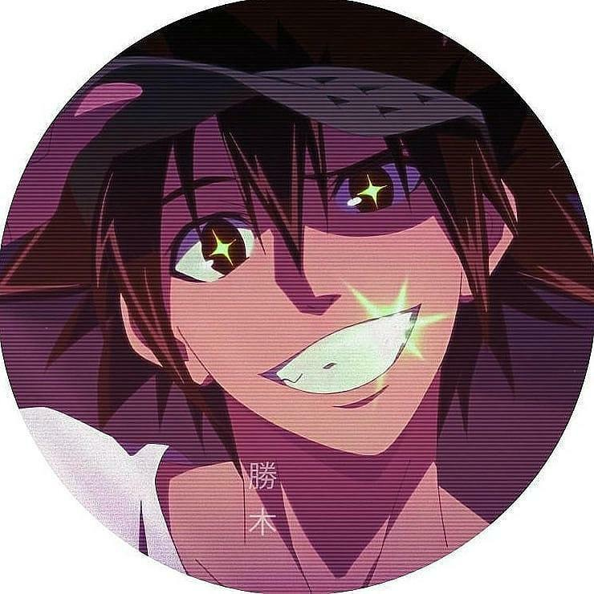
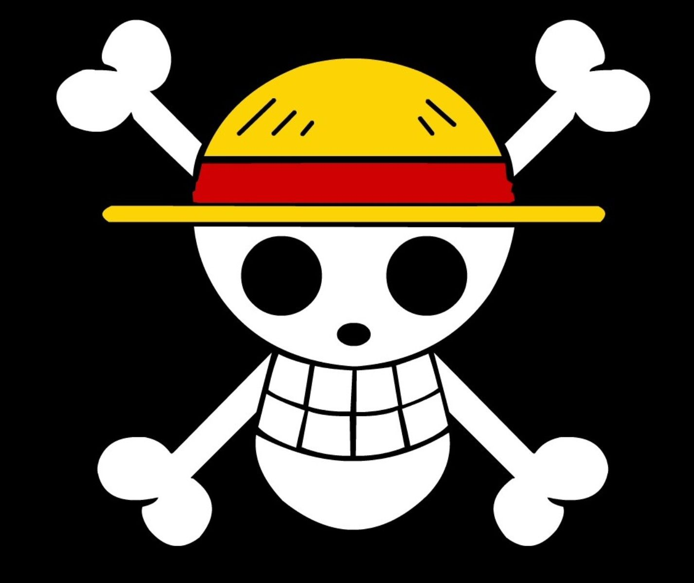

ALLIANCE MANGA
Hey tu veux rentrer dans l'Alliance Manga?! C'est trés simple, suit et remplit ces conditions!
Alors les conditions suivante sont:
- Respect envers les autres membres et grades supérieurs
- Si un membres se sens offensé, il doit parler au administrateurs
- Toute relations non-professionelles ne doit être exercé dans le groupe
- Activé un minimum assidue
- Discord Obligatoire
- ALLIANCE Manga en bio Obligatoire
- Prévenir en cas de soucis ou de inactivité prolongée
- Contribuer au développement de l'alliance et ses projets
- l'avis de tous compte
- Deux avertissement mènent à une exclusion permanente et/ou définitive
- Un avertissements ou un ban temporaire peut-être décider ou retirer par suite à un conseil administratifs
- 100 abonnés minimum obligatoire pour nous rejoindre
- Spam sanctionné
- PUB à l'arrivé et mal vu et déconseillée
- Sur discord : Grade d'activité et levels pour nous montrer vos échelons
- Se familiariser avec les autres membres pour une ambiances chill (pas que professionelle)
- Groupe solidaire et s'entraide toujours
- L'union et le partage sont notre force
Nous sommes un groupe cool et tranquille, ces régles sont strictes mais
nous permettent d'éviter des soucis que nous avons déjà eu et de se perfectionner.
Administrateur principal:

Ses subordonnés :



FICHE DES ADMINISTRATEURS
@manga.binks
Manga.binks est assez entreprenant et sérieux fais tous pour réussir
il a crée son compte pour partager sa passion.

@wonder_boy_3.0
Wonder_boy est quelqu'un de simpas et respecteux il est passionné par les mangas
et les animes sur son compte vous trouverez des scène d'anime qui l'on plus et qui veut partager
@naji.sensai
Naji est trés gentil et serviable, sur son compte vous trouverez des citations,
ses dessins, des fois des amvs et des réels animés.
@otakufrdz
Otakufrdz est un gars bien sur son compte vous trouverez des tweets humours,
et des jeux en story.
@k.lawliet
K.lawliet est grave cool sur son compte, il essaye de partager sa culture manga au maximum
sur sa page il propose des scènes q'on ne voit pas souvent sur insta et des scène qui rende nostgalgique. il propose aussi dse édits photos. et en story il donne son avis sur des anime qui l'a vu et il fait des jeux et tournois de personnages.
@kururo_lucifere_
Kururo est quelqu'un de bien sur son compte vous trouverez des amvs
et des édits qu'il fait luimeme; pas de repost donc il y met un temps fou juste pour ses abos
il fait des story en anglaisest francais ,
il explique que il a plusieurs abonné de plusieurs pays alors il s'adapte,dans ses story il fait
aussi des jeux et des tournois.
@leon_shxde
Leon l'une des personne qui t'aideras le plus dans l'alliance, sur son compte elle fait
des édits et elle est écris des citations sur son compte instagramme
elle aussi écrivaine éditrice, elle est honnete,drole selon ces amis.
@ad.sukehiro
ad.sukehiro est grave simpas comme gars sur son compte vous trouverez
des poste scène, des tweets, top des openings,
en story il fais des sondages et notes sur des personnages d'animé